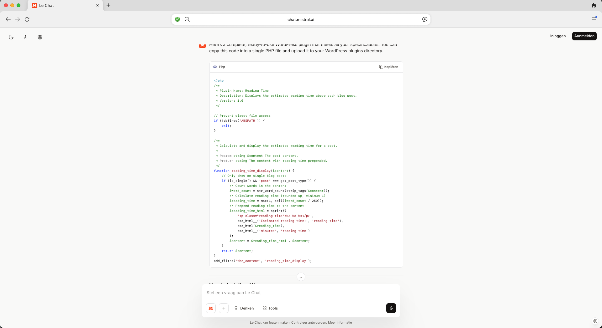
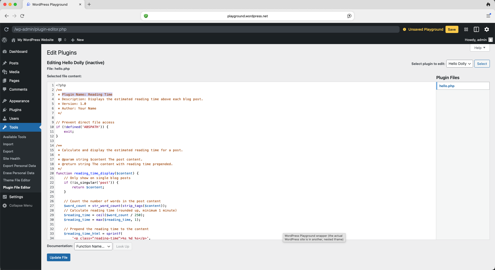
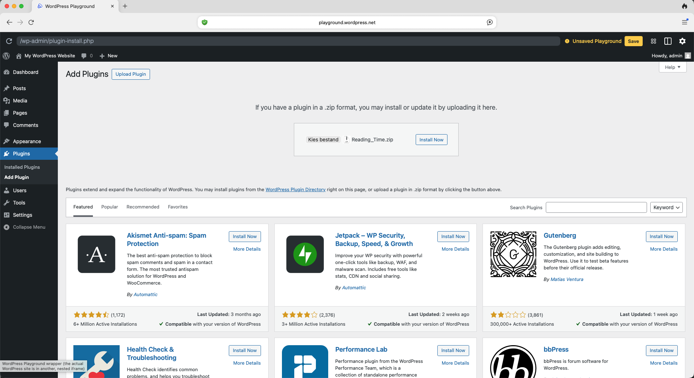
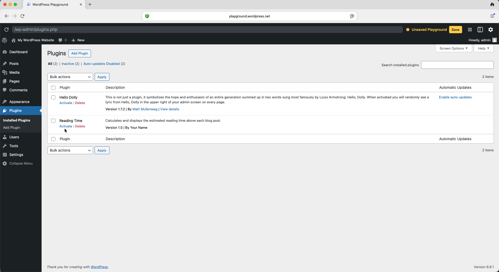
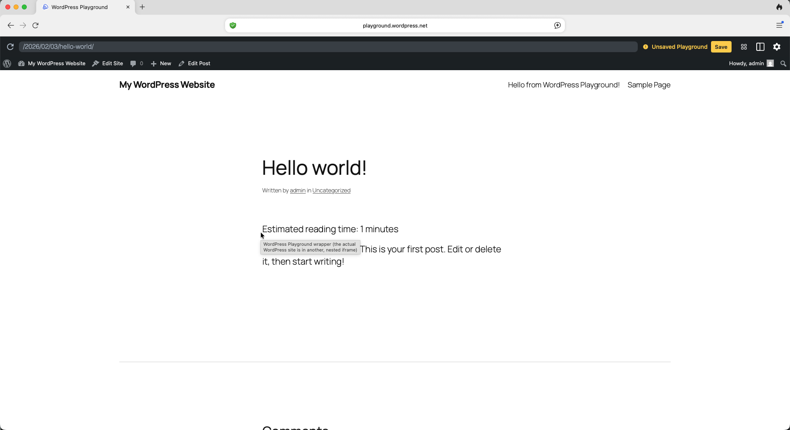
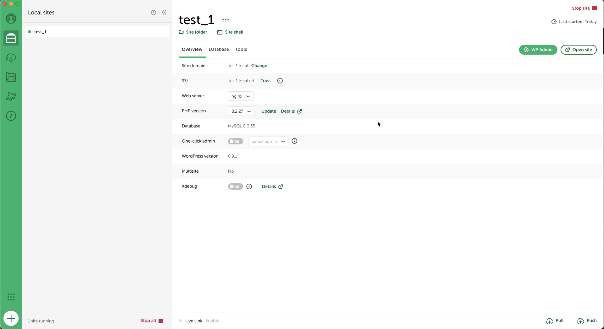
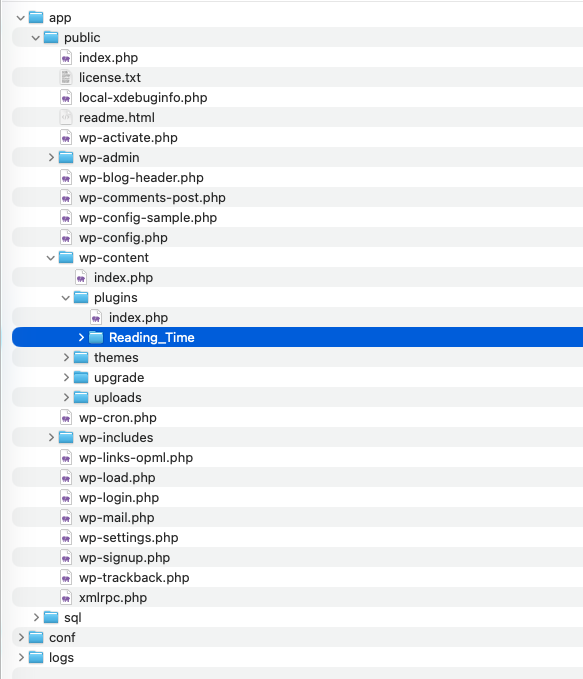

Step-by-step guide
Choose your setup and follow the steps. Round 1 is steps 1 to 7: build, install, test. Step 8 is for after the break. On 14 October 2026 we clicked through the Playground steps on playground.wordpress.net (WordPress 7.1.3), all except the zip upload. For LocalWP we only checked the folders and the error log (LocalWP 10.1.2 on a Mac); the LocalWP buttons weren't clicked through again. If a button looks different on the day, ask a helper.
- No installation needed
- Works in any browser (best in Chrome or Edge)
- Ready in 30 seconds
- Keeps a snapshot in your browser now and then, not every change (see step 1)
Choose this if you skipped the preparation, don't want to install anything, or just want to try it out quickly.
- WordPress runs locally on your laptop
- Works on Mac, Windows, and Linux
- Your files and plugins are saved for real
- Requires installation (about 10 minutes, see preparation page). Install it before the workshop, not during.
Choose this if you completed the preparation and want to keep your plugin after the workshop. Maintenance Mode only works reliably here.
-
Open WordPress Playground
Open the workshop link in Chrome or Edge: playground.wordpress.net/?plugin=plugin-check&url=/wp-admin/plugins.php. It starts a fresh WordPress in your browser with Plugin Check already installed (you need that after the break) and opens on the Plugins screen. That takes a few seconds.
You're ready when you can see the Plugins screen of your own WordPress, with two plugins in the list: Hello Dolly (not active) and Plugin Check (PCP) (active), and you have an AI chat open in another tab.At the bottom of the screen is Playground's own toolbar, the Dock, with its own address bar. Type paths there, not in your browser's address bar. For example
/wp-admin/plugins.phpfor the Plugins screen, or/?p=1for the first blog post. The Dock has buttons like Playgrounds, Export and Dev Tools. Dev Tools shows or hides a second set of buttons, including Files and Logs, which you'll use in steps 4 and 7. The Dock can cover buttons at the bottom of a WordPress screen: scroll down, or click the small arrow button on the right of the Dock (Hide tools) to make it smaller.Don't use your browser's reload button. Reloading the page, or opening the workshop link again, starts a new, empty WordPress. To refresh, use the ↻ button in the Dock. Lost your site anyway? Click Playgrounds in the Dock. Your earlier site is listed under Recent autosaves with a made-up name (like "Patient Busy Country"). Click it to open it again. Autosave doesn't catch every change, so keep your latest code in the AI chat too.Want to keep your site? In the Dock, click Playgrounds. Under Current Playground, click the ⋮ menu next to your site, then Save in browser storage. The Playground reloads (in our test it opened on the home page) and the Dock says Saved. (Reopened a site from Recent autosaves? Then that menu says Keep autosave permanently instead.) That copy only lives in this browser on this laptop. For a file you can take home: Export → Download as .zip. That zip is the whole site, which you can import into Playground again later. Your plugin code alone is easier to keep: it's still in your AI chat. -
Choose your plugin idea
Not sure what to build? Browse the plugin ideas, or pick one from the prompts page (those prompts are already written for you). Maintenance Mode doesn't work reliably in Playground: pick another idea, or use LocalWP.
Keep it simple. One feature that works beats three features that don't. -
Write your prompt and generate the code
Open your AI tool (ChatGPT, Claude, Mistral Vibe, etc.) in a new tab. Use the prompt template from the preparation page, fill in your plugin idea, and send it.
You'll get PHP code back: that's your plugin. Copy all of it, from
<?phpat the top to the very last line. Did the AI split it over several files? Ask: "Put everything in one PHP file."
-
Install your plugin
Choose one of three methods. Not sure? Use A.
Easiest Option A: Plugin File Editor (overwrite Hello Dolly)- Go to Tools → Plugin File Editor, or type
/wp-admin/plugin-editor.phpin the Dock's address bar. It's not under Plugins: with the default block theme, WordPress puts it under Tools. - The first time, a Heads up! box appears. Click I understand.
- Top right, at Select plugin to edit, choose Hello Dolly and click Select. Check that the heading says Editing Hello Dolly. Never overwrite Plugin Check: you need it after the break.
- Click in the code, select everything (Ctrl+A on Windows, Cmd+A on Mac) and paste your code over it.
- Scroll down and click Update File. You should see File edited successfully. Hello Dolly isn't active yet, so WordPress doesn't test your code now. That happens when you click Activate in step 5. On the Plugins screen, Hello Dolly is gone and your plugin's name is in its place.
Hello Dolly isn't in the list? On the workshop link it is (checked 14 October 2026). On a site where the default plugins were removed, it's missing. Use option B instead: it doesn't need Hello Dolly. Or install the starter plugin my-first-plugin.zip with option C and overwrite My First Plugin.

Own name Option B: Files tool (your plugin gets its own name)Playground's Files tool lets you create the plugin file yourself. No Hello Dolly needed, and your plugin keeps its own name.
- Click Files in the Dock. Don't see it? Click Dev Tools first. (Clicking Dev Tools again hides Files.)
- In the folder list on the left, open wp-content and click plugins, so it's open and highlighted. No folder list, just code and a Browse files button? That happens in a narrower window: click Browse files first.
- Click the Create new folder icon at the top of the list. A folder called New Folder appears with its name selected. Name the folder after your plugin plus your initials, for example
reading-time-md(step 5 explains why), and press Enter. - Click that new folder, then the Create new file icon. A file called
untitled.phpappears with its name selected. Type the same name as the folder with.phpat the end, for examplereading-time-md.php, and press Enter. - Check the path at the top, next to the word Files. It should end in your file, for example
/wordpress/wp-content/plugins/reading-time-md/reading-time-md.php. (The first time you open Files it showswp-config.php: never paste there, that breaks the whole site.) Paste your code into the empty editor and click Save (top right). In our test the plugin was already on the Plugins screen before we clicked Save; clicking it anyway does no harm. Close Files by clicking Files in the Dock again.
No safety net here. Files saves whatever you paste, even broken code. Step 7 shows what that looks like and how to get out of it.If you have a zip Option C: Upload a zipUse this if your AI gave you a zip file, or for the starter plugin my-first-plugin.zip.
- Go to Plugins → Add Plugin and click Upload Plugin at the top.
- Choose the zip from your downloads folder
- Click Install Now.

- Go to Tools → Plugin File Editor, or type
-
Activate your plugin
Go to Plugins → Installed Plugins. Find your plugin (it shows the name from the
Plugin Name:line at the top of your code) and click Activate. You should see Plugin activated."There is a new version of [your plugin] available… update now"? Don't click it: that would replace your code with a plugin from WordPress.org. We saw this message once, in an earlier test, after overwriting Hello Dolly with code named "Reading Time". On 14 October 2026 the same steps gave no message. To keep the odds low, make the name yours: add your initials to thePlugin Name:line, and to the folder name if you made one."Plugin could not be activated because it triggered a fatal error." Your code has a mistake. WordPress left the plugin switched off, so your site still works. The notice doesn't say what's wrong; the error line is in Logs in the Dock (under Dev Tools; if nothing opens, wait a second or click once more). The newest error is at the top. In our test it read:
14-Oct-2026 12:29:07 UTC PHP Parse error: syntax error, unexpected token "echo", expecting "," or ";" in /wordpress/wp-content/plugins/hello.php on line 6. Copy it with the copy icon next to it, or select the text, and paste it into your AI chat (see step 7). The same error can be listed twice; one copy is enough. If you overwrote Hello Dolly, the error mentionshello.php: that's your code.
-
Test your plugin
Open a blog post, not the home page. On the workshop link the home page is a list of posts, and most plugin ideas only show on a single post (our Reading Time test showed nothing on the home page). Type
/?p=1in the Dock's address bar to open the Hello world! post. Or go to Posts, hover over Hello world! and click View.What you should see with Reading Time: a line like Estimated reading time: 1 minutes above the post. Yes, "1 minutes". It works, and it's still wrong. Hello world! is very short, so write a longer post to test properly.It works? Look at it the way a visitor would before you celebrate. Then ask the AI for one improvement: different styling, an option, or a fix for an edge case like "1 minutes".
-
Iterate
Something not working, or want to improve it? Go back to your AI tool and be specific about the problem:
- "The plugin is activated but nothing appears. Here is the code: [paste]"
- "PHP error: [paste the error line from Logs]. Can you fix this?"
- "It works. Can you make the text gray and slightly smaller?"
Paste the new code over the old code the same way you installed it: Tools → Plugin File Editor (choose your plugin, then Update File) or Files in the Dock (then Save). Then reload the post with the ↻ button in the Dock.
When it breaks (this will happen, and it's fixable):
- Plugin File Editor, plugin active: WordPress tests your code before saving. Broken code is not saved, your site keeps working, and a red box appears just above Update File (scroll down, or hide the Dock if it covers the box). In our test, with one
;missing, it said:Your PHP code changes were not applied due to an error on line 10 of file wp-content/plugins/…. Please fix and try saving again. syntax error, unexpected token "}", expecting ";"The missing;was actually at the end of line 9: PHP often notices a mistake one line late. Copy the whole box into your AI chat. - Files tool, plugin active: no test. Broken code gives "There has been a critical error on this website.", in wp-admin too, so the Plugin File Editor is out of reach. Don't start over. Open Logs in the Dock. The newest error is at the top, for example:
PHP Parse error: syntax error, unexpected token "}", expecting ";" in /wordpress/wp-content/plugins/reading-time-md/reading-time-md.php on line 10. Older errors stay in the list (in our test even ones from other Playgrounds in the same browser), so check the time and the file name. Paste that line into the AI. Then open Files, paste the fixed code into your file, click Save and refresh with ↻ (still the error? Wait a moment and click ↻ again). Files keeps working while WordPress is down. The error page also tells you to check your email. In Playground that email lands under Email in the Dock, but you don't need it.
Does your plugin create a database table? If your updated code includes setup that runs on activation (like creating a database table), WordPress won't run that again by itself: it only runs when the plugin is activated. Go to Plugins, deactivate your plugin, then activate it again.
This is the real skill: not writing code, but knowing how to describe a problem and steer the AI toward a solution. -
After the break: let Plugin Check look at it
In Round 2 you run Plugin Check on your own plugin. On the workshop link it's already installed: go to Tools → Plugin Check, or click Check this plugin under your plugin on the Plugins screen. Which boxes to tick, and the prompts to explain and fix a finding, are on the prompts page.
Started from plain playground.wordpress.net instead? Install it first: Plugins → Add Plugin, search for Plugin Check, click Install Now, then Activate.
-
Start your WordPress site in LocalWP
Open LocalWP. If you haven't created a site yet, click the + button at the bottom left and follow the steps with default settings. Once your site is listed and running, click WP Admin (top right) to open the dashboard.
You're ready when you can see the Plugins screen of your own WordPress and you have an AI chat open in another tab. Still installing LocalWP? Switch to the Playground tab above for today: installing during the workshop eats your whole first round.
-
Choose your plugin idea
Not sure what to build? Browse the plugin ideas for inspiration, or pick one from the prompts page — those prompts are already written for you.
Keep it simple. One feature that works beats three features that don't. -
Write your prompt and generate the code
Open your AI tool in a new tab. Use the prompt template from the preparation page, fill in your plugin idea, and send it. You'll get PHP code back: that's your plugin. Copy all of it, from
<?phpat the top to the very last line. Did the AI split it over several files? Ask: "Put everything in one PHP file."Keep the AI tab open. You'll come back to it when you iterate. -
Save and install your plugin
Choose the method that suits you best:
Recommended Option A: Text editor- Open Notepad (Windows), TextEdit (Mac), or any plain text editor
- Mac TextEdit only: go to Format → Make Plain Text first, or it saves as a Word-style file that PHP can't read.
- Paste your generated PHP code and save the file as
plugin-name.phpplus your initials (e.g.reading-time-md.php, step 5 explains why). If your editor asks whether to use.txtinstead, keep.php. - In LocalWP, click Site folder just below your site's name
- Navigate to
app/public/wp-content/plugins/ - Create a new folder with the same name as your file (e.g.
reading-time-md) - Move your
.phpfile into that folder

Alternative Option B: Upload a zip via WP AdminUse this if your AI generated a downloadable zip, or if you'd rather not navigate the file system.
If your AI gave you a zip: skip to To upload below.
To create a zip yourself:
- Put your
.phpfile in a folder with the same name - Compress it:
- Mac: right-click the folder → "Compress"
- Windows: right-click → "Send to" → "Compressed (zipped) folder"
- Linux: right-click → "Compress" or run
zip -r plugin.zip folder/
To upload:
- In WP Admin, go to Plugins → Add Plugin and click Upload Plugin
- Choose your zip file and click "Install Now"
- Open Notepad (Windows), TextEdit (Mac), or any plain text editor
-
Activate your plugin
Go to Plugins in WP Admin. Your plugin should appear in the list, with the name from the
Plugin Name:line in your code. Click Activate. You should see Plugin activated.Plugin not in the list, or odd text at the top of your site? Check three things. (1) The file name really ends in
.php, not.php.txtor.rtf. Your computer may hide the last part: on a Mac, select the file and press Cmd+I, then look at Name & Extension; on Windows, in File Explorer choose View → Show → File name extensions. (2) Open the file in your editor: the first line is<?php, followed by the comment withPlugin Name:. Does it start with{\rtf1or anything else? It was saved as formatted text or has extra text above the code: paste the code into a new plain-text file and save it again. (3) The file sits directly in its own folder inwp-content/plugins/, for exampleplugins/reading-time-md/reading-time-md.php, not one folder deeper. WordPress doesn't look further than that."Plugin could not be activated because it triggered a fatal error." Your code has a mistake. WordPress left the plugin switched off, so your site still works. If the screen doesn't show what's wrong, the exact error is in a log file. In LocalWP, click Site folder (as in step 4), then open
logs→php→error.login your text editor. That's the site folder itself, notapp/public. The newest error is at the bottom (the other way round from Playground). A real line from a LocalWP 10.1.2 site, from May 2026, path shortened:[04-May-2026 17:58:20 UTC] PHP Parse error: syntax error, unexpected token "<", expecting end of file in …/app/public/wp-content/plugins/my-first-plugin/my-first-plugin.php on line 24. Copy the last line that mentions your plugin's file and paste it into your AI chat (see step 7). The time is in UTC: in November that's one hour behind the clock in the Netherlands. Noerror.login that folder? Then nothing has been logged yet; the file appears with the first error. Reopen the file after each new error, so you're not reading an old version."There is a new version of [your plugin] available… update now"? Don't click it: that would replace your code with a plugin from WordPress.org. To be safe, add your initials to the folder name and thePlugin Name:line (for examplereading-time-md). -
Test your plugin
Click Open site in LocalWP, or Visit Site in WP Admin. Then open a single blog post, such as Hello world!: most plugin ideas don't show on the home page.
What you should see with Reading Time: open a single post, such as Hello world! (not the home page). Above the post you should see a line like Estimated reading time: 1 minutes. Yes, "1 minutes": it works, and it's still wrong.It works? Look at it the way a visitor would before you celebrate. Then ask the AI for one improvement: different styling, an option, or a fix for an edge case like "1 minutes". -
Iterate
Something not working? Go back to your AI tool and describe the issue clearly:
- "The plugin is activated but nothing appears. Here is the code: [paste]"
- "PHP error: [paste the last line about your plugin from logs/php/error.log]. Can you fix it?"
- "It works. Can you add a settings page to change the reading speed?"
Copy the new code, open your PHP file in the editor, replace everything, save. Reload the post in your browser. No need to activate the plugin again.
Does your plugin create a database table? If your updated code includes setup that runs on activation (like creating a database table), WordPress won't run that again by itself: it only runs when the plugin is activated. Go to Plugins, deactivate your plugin, then activate it again.
White screen, a PHP error, or "There has been a critical error on this website"? Your plugin is active and broken, so WordPress can't load, often wp-admin included. Don't panic, and don't reinstall anything. (1) Get the error: Site folder →logs→php→error.log, newest line at the bottom (see step 5). Paste it into your AI chat. (2) Get your site back: inapp/public/wp-content/plugins/, rename your plugin folder, for example add-off. WordPress switches the plugin off and your site loads again. (3) Put the fixed code in your file, rename the folder back, and activate the plugin again on the Plugins screen. -
After the break: let Plugin Check look at it
In Round 2 you run Plugin Check on your own plugin. Install it now if you haven't: Plugins → Add Plugin, search for Plugin Check, click Install Now, then Activate. You'll find it under Tools → Plugin Check. Which boxes to tick, and the prompts to explain and fix a finding, are on the prompts page.